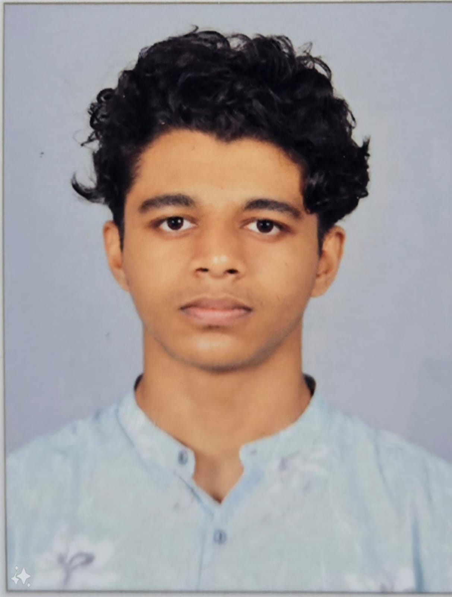

About Me

My name is Alan, and I'm an interactive media student at Algonquin College who is passionate about both making and studying art. I appreciate discovering how things work, especially how to view things from a fresh perspective. I also relate to the well-known saying,[1]"I am seeking. I am striving. I am in it with all my heart."-Vincent van Gogh. My path has brought me to Algonquin College, and I'm hoping that things can only get better from here. I always attempt to incorporate creativity and try to think out of the box in many things I try to do.
Aside from my academic and professional activities, I enjoy reading, working out in the gym, and doing art and drawing. I also love traveling and engaging in outdoor activities like skating.My experiences have taught me that[2]"Great things come from hard work and perseverance. No excuses."-Kobe Bryant, and I'm always looking to develop and share my experiences to others.
Quotes
In this world, wherever there is light, there are always shadows. As long as there is a concept of victors, the vanquished will also exist. The selfish desire for peace gives rise to war. And hatred is born in order to love.-Madara Uchiha
Hobbies
Drawing
aI enjoy spending my free time drawing, as it allows me to express my creativity and explore new ideas.
Gaming-I love gaming, which gives me a fun and immersive way to unwind and challenge myself.